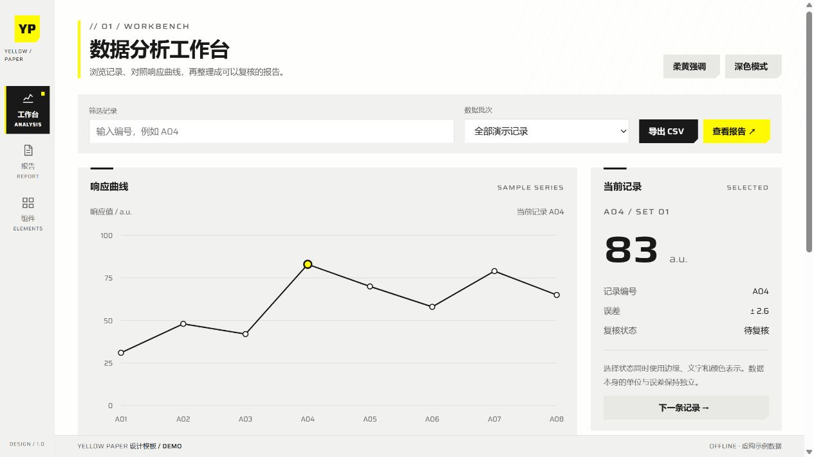

前端与工作台
直接使用 HTML、CSS 与本地字体；也可以接入已有的 React、Vue 或其他技术栈。保留你的筛选、表格和任务逻辑。
把浅纸色、墨黑、亮黄和工业排版，带进你的下一个作品。为 AI 提供可调用的规则，也为你准备能直接改用的模板。
非官方风格工具包 / 不包含游戏官方素材

同一种气质，按载体调整信息密度。
直接使用 HTML、CSS 与本地字体；也可以接入已有的 React、Vue 或其他技术栈。保留你的筛选、表格和任务逻辑。
六类版式可以复制组合。文字、表格和数据图表保持可编辑，按投影阅读调整字号，不把网页整页截图塞进 PPT。
共用配色和字体规则，重新安排段落、图表与留白。保持图例、单位、来源和数据本来的含义。
npx skills add zhendenanbeng/endfild-ui --skill endfield-design-kit需要可运行 skills CLI 的 Node.js。也可按仓库说明使用 Python 或手动安装。
使用 $endfield-design-kit 做一个终末地风格的数据分析前端。 保留筛选、数据表与导出，适配桌面和手机。
使用 $endfield-design-kit 把这些材料做成 8 页可编辑 PPT。 保留原始数字、图例和引用，采用终末地风格。